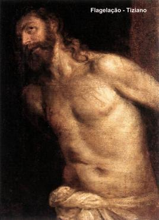
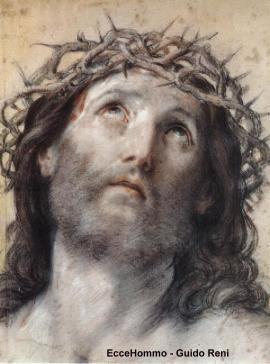
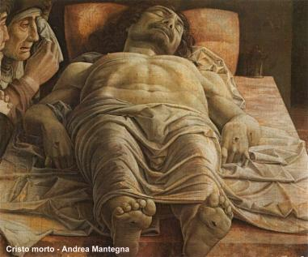

O Amor de DEUS é imenso, abrangente
e sem medidas, tanto se manifesta em 
A humanidade envolvida pela presença Divina, quer encontrar o SENHOR, permanecer junto DELE, porque compreende que ELE é a origem de todo “bemâ€, fonte da Vida e do Amor, mas sozinha não consegue. As pessoas são limitadas pela sua própria natureza humana. A busca da felicidade fica na dependência das possibilidades de cada um, ao exercÃcio de uma vigorosa perseverança, a grandeza do interesse demonstrado, e primordialmente depende da intensidade do relacionamento que possui com o CRIADOR. O ser humano não consegue por sua própria vontade e recursos pessoais atingir a plena felicidade. Somente poderá alcança-la em DEUS, que inventou a alma e permitiu que nascêssemos para a vida, que realizássemos uma missão e pudéssemos gozar a felicidade suprema e infinita. Mas, enquanto isso não acontece, como resposta ao anseio das pessoas que procuram viver seguindo a direção do SENHOR e procuram uma luz, que lhes dê inspiração e estÃmulo para encontrar o caminho da felicidade, encontram a misericórdia e a bondade Divina que também ilumina a humanidade através dos textos sagrados, revelando que a glória de DEUS se mostra e resplandece na Face de CRISTO!
É uma verdade admirável que o Apóstolo São Paulo colocou de modo evidente, na segunda carta que escreveu aos CorÃntios e que está nos versÃculos do Novo Testamento:
“Porquanto DEUS, que disse: Do meio das trevas brilhe a luz!, foi ELE Mesmo Quem reluziu em nossos corações, para fazer brilhar o conhecimento de Sua Glória, que resplandece na Face de CRISTO.†(2 Cor 4,6)
Isto significa dizer, que se amamos o FILHO DE DEUS e lhe dedicamos os maiores e melhores louvores, estamos também amando o PAI ETERNO, porque é na Face de JESUS que resplandece a glória eterna do CRIADOR.
Por outro lado, considerando que por causa das próprias limitações, as pessoas tem necessidade de "vêr" para "crêr", JESUS além de nos revelar o PAI ETERNO durante a sua Vida Pública (conforme está registrado nos Evangelhos), nestes últimos séculos, através de admiráveis manifestações sobrenaturais, o SENHOR nos enseja delinearmos os contornos adoráveis do CRIADOR, propiciando a humanidade sentir concretamente a presença do DEUS Vivo no mundo.
Desse modo, o culto a Sagrada Face está inserido
neste contexto, porque conduz 
Cada criatura tem a sua maneira de ver, admirar e contemplar um acontecimento, uma imagem ou um fato. Entretanto, somente com o auxÃlio da luz Divina, o coração pode caminhar com segurança e desembaraço na escuridão dos detalhes, para “enxergar†muito do invisÃvel e do sagrado, esboçando contornos e vislumbrando cores que encantam a mente e satisfazem o espÃrito. Embora sejamos limitados, o entendimento pessoal, o raciocÃnio e a alma, sentem a necessidade de alçar vôos ultrapassando as fronteiras da própria natureza humana e vão ao encontro do SENHOR até no infinito, através das Orações, dos Sacramentos e das Boas Obras, querendo ama-LO, mostrando-LHE amizade e devoção.
Então, com este conceito, quero afirmar que a devoção a Face do SENHOR, é uma autêntica manifestação dessa busca incessante, uma demonstração aparente de que o fiel quer através de seu carinho por aquela imagem, mostrar que ama o CRIADOR. Porque acolhendo em seu coração o contorno fascinante da FACE de JESUS, grava e elabora contornos vivos da imagem de DEUS em sua mente, tem o ensejo de deliciar aquele momento e gozar a doçura indizÃvel da adorável e sagrada presença, que permanecerá viva em sua memória e atuará como maior estimulo e inspiração ao longo de seus dias na caminhada existencial. Assim sendo, a devoção a Sagrada Face do SENHOR JESUS é um caminhar seguro ao encontro da felicidade almejada, porque além da alegria interior, ela proporciona um manancial abundante de graças para o corpo e para a alma, ao mesmo tempo em que derrama uma prodigiosa paz no coração do fiel.

“Enfim, o que é o ConcÃlio Ecumênico, senão um novo encontro com a FACE do CRISTO Ressuscitado.â€
Com estas palavras, ele realça e justifica a esperança e o desejo manifestado pelos últimos Papas, assim como pelos Bispos e Padres Conciliares que participavam do ConcÃlio Vaticano II, os quais acabaram por concluir:
“Que resplandeça a FACE de JESUS CRISTO. De tal modo devemos consagrar nossas energias e pensamentos a uma renovação interior, nós os pastores e vós, o rebanho a nós confiado, a fim de que aconteça de fato a conversão do coração, objetivando que os povos cultivem os Mandamentos Divino e vivam fraternalmente, apresentando-se afáveis diante do SENHOR, ensejando que ELE resplandeça em todos os corações e em cada um, faça refletir o esplender da luz amorosa do PAI ETERNOâ€.
A Sagrada Face de JESUS foi apresentada pela primeira vez a humanidade através das notáveis fotografias do Santo Sudário, num acontecimento histórico e inesquecÃvel, que procuraremos recordar nas páginas a seguir.